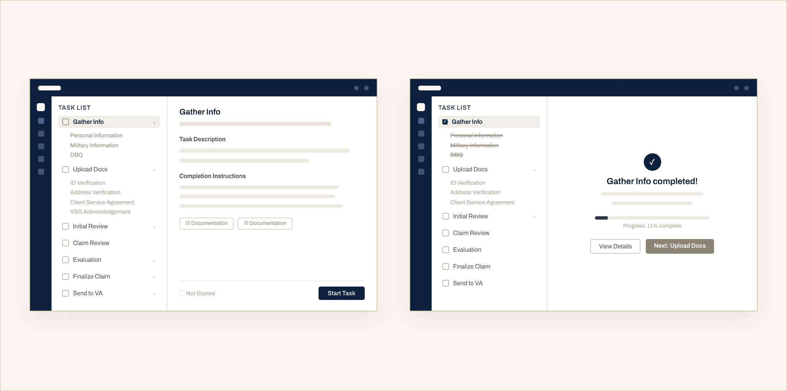
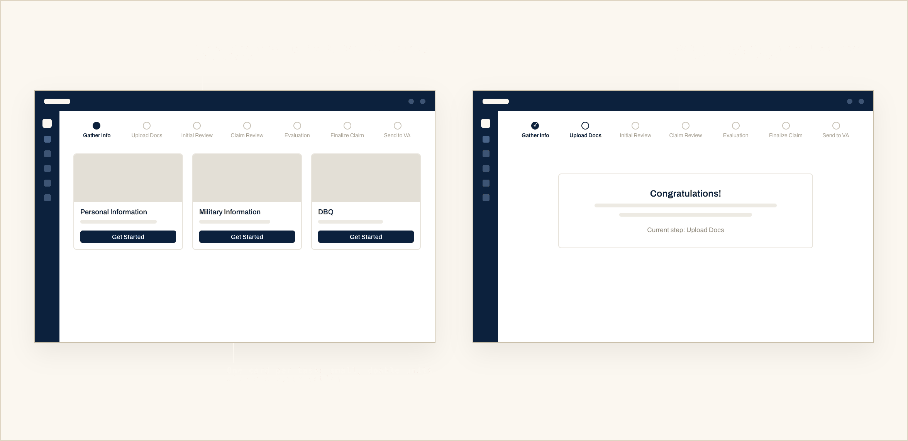
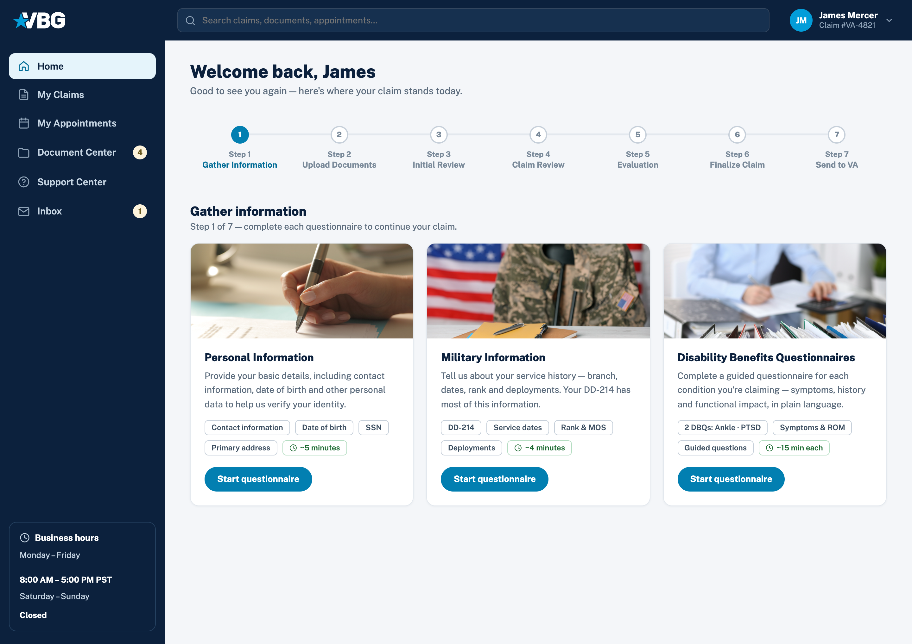
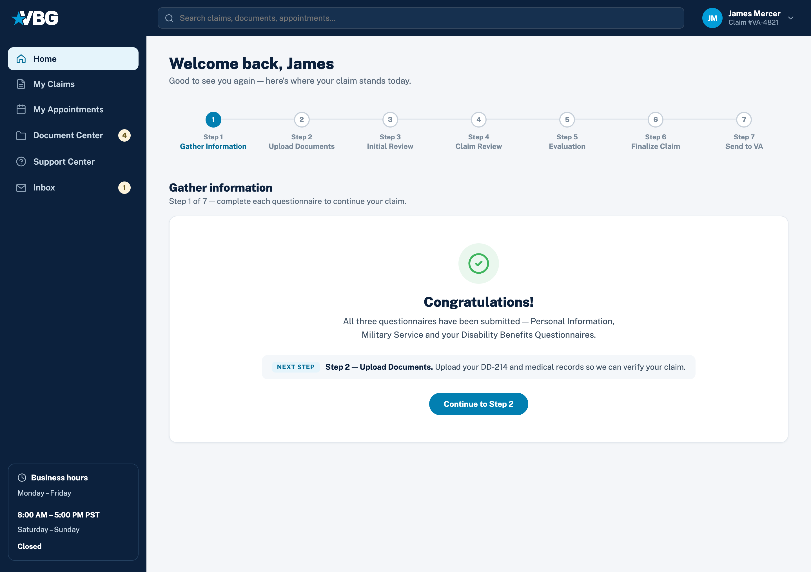
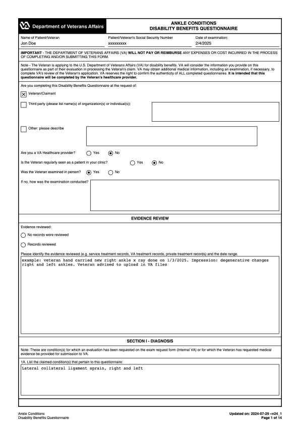
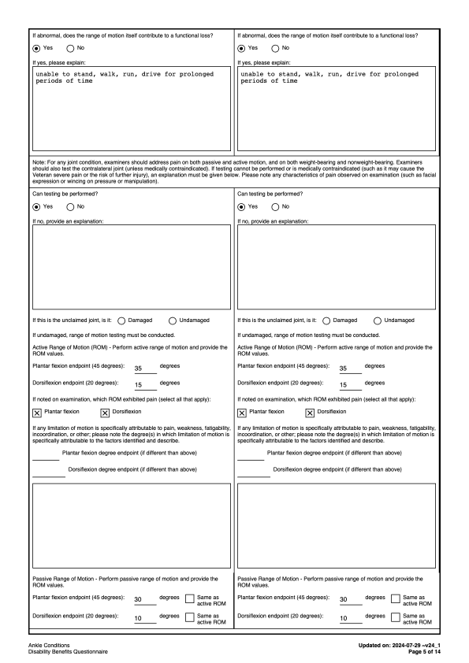
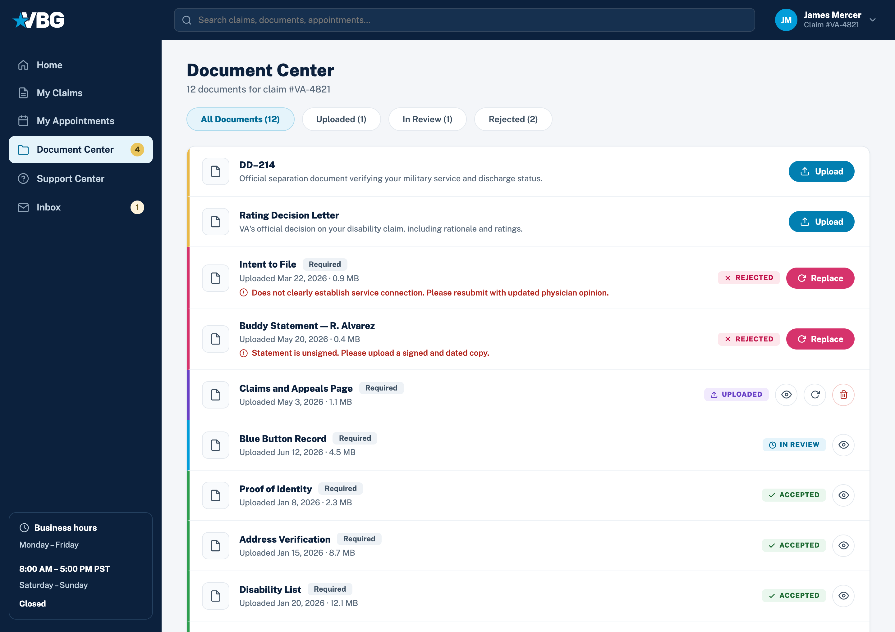
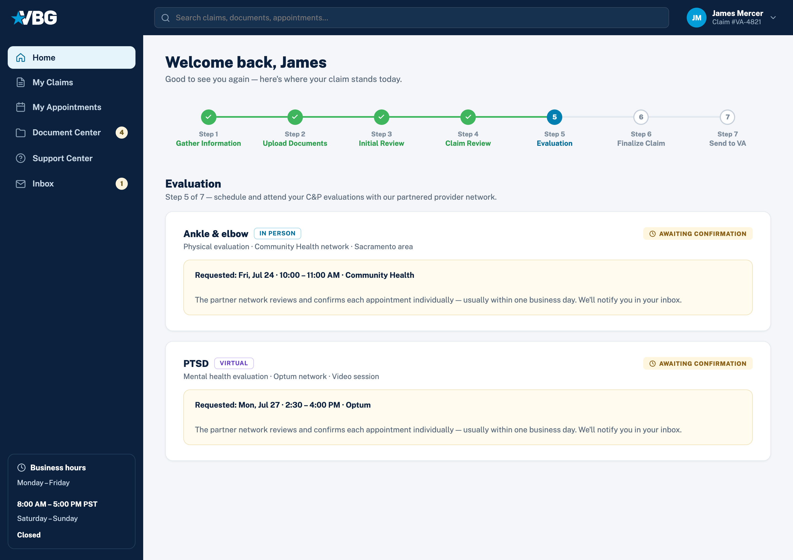

A
Ruled out
Digitize the forms
E-forms and e-signatures bolted onto the existing process. Cheapest, live in weeks — but staff still carry every step.
Removes the paper, not the ceiling.
Veteran Benefits Guide runs disability claims for veterans, and ran them entirely on paper. Every claim moved at the speed of a staff member carrying it. I led the design of the platform that took the whole thing online, and cut processing time nearly in half.
CONTEXT
Owned
Partnered on
Constraint
Not mine: the backend claim engine, and the VA requirements I designed within.
Problem · Discovery
There was no research to inherit. The first month was fieldwork: I sat with every role that touches a claim and shadowed live veteran calls. Four frictions shaped everything that followed:
Days lost to paperwork
Requests for more documents after submission restarted the wait.
Disability Benefits Questionnaires too confusing to finish alone
Veterans leaned on case managers and revised them repeatedly.
No control over evaluations
Every scheduling change routed through a coordination team.
Zero visibility into claim status
The only option was calling customer service.
Strategy
“Go digital” is not one decision; it is a fork. We weighed three paths:
E-forms and e-signatures bolted onto the existing process. Cheapest, live in weeks — but staff still carry every step.
Removes the paper, not the ceiling.
Faster than building, but nothing on the market modeled VA claim logic or could turn a DBQ into a guided flow.
Bends the business around the tool — again.
Slowest of the three, and the only one that attacks the actual constraint: veterans depending on staff for every move.
Fourteen months, and the ceiling comes down.
Process 01: Straighten the path
The map made the diagnosis obvious: most of the eighteen touchpoints existed to move paper between desks, not to serve the veteran. That became the cut rule: a step survives only if the veteran needs it, not if the paper does.
Before: manual process, 18 touchpoints
After: VBG Portal, 7 digital steps
1
Sign up
merges 2 steps
2
Guided questionnaires
no more phone calls
3
Documents checklist
self-correcting
4
Schedule evaluation
self-serve
5
Complete evaluation
6
Sign additional documents
7
Receive decision letter & pay invoice
merges 2 steps
Process 02: Build the spine
Seven steps needed a predictable structure. I tested two opposite frameworks, total transparency versus total focus, and shipped the combination.
Explored · set aside
Veterans called it informative and overwhelming in the same breath — that contradiction was the finding: transparency is not showing everything, it is showing where you are.

Final design · shipped
The stepper won because it answers the only question a veteran reliably has: where am I, and what is my next move.



Process 03: Retire the form
The fight of the project: our medical consultant’s red line was legal defensibility — the output had to file as a real DBQ; mine was that a veteran with no medical vocabulary could finish alone. The card system below is how both red lines held.
The starting point
The audit came first: clinical terminology, no guidance anywhere, and one misread field meant weeks of delay.


Deconstruct
Systematize
I shaped the cards around how a veteran answers, not how the VA asks, and hid every follow-up until an answer earns it, because each visible-but-irrelevant question is one more reason to call for help.
Final design · shipped

Process 04: Close the loops
Explored · set aside
The obvious first draft: a table of uploads. But a rejected buddy statement looks identical to an accepted X-ray, and nothing says what needs the veteran's attention.
Chosen direction
Once documents had a vocabulary, sorting, filtering, and badging stopped being separate decisions; they are the same five words repeated. That is why I designed the words before the screens.
PRIORITY SORT
STATUS FILTER TABS
NAV ATTENTION BADGE
TYPED UPLOAD MODAL
Chosen direction
The redesign started with vocabulary, not screens: five states, split by one question — is the veteran needed, or are we? Everything visual just repeats that answer.
Missing: the row describes what it is and where to find it.
Received and queued for review.
TEAM ACTSA case manager is verifying it meets VA requirements.
TEAM ACTSCleared for the claim file. No action needed again.
DONEDidn't meet requirements: the reason appears inline with Replace.
Fixed color per state, everywhere it appears: row stripe, badge, filter tab, dashboard count
Final design · shipped
Each row offers only the actions its state allows: Awaiting gets one Upload button, Rejected gets the reason inline plus Replace. The row itself is the instruction.

Process 05: Book the evaluation
Step 5 books C&P evaluations through the partner network, and it forced the project’s hardest trade. Veterans wanted instant booking and a visible address. Clinics confirm every appointment by hand, so instant booking would be a lie; a visible address would let veterans book around VBG, when the network is the business. I designed the truth instead: trust built with less information, as long as what you show is honest and what you hide has a schedule.
Chosen direction
Veteran picks a real date and a real slot from the network's availability.
The request is echoed back verbatim; the clinic confirms within a business day.
NETWORK ACTSFull detail grid: date, time, examiner, network, contact, and a location that stays partly hidden.
DONE · UNLOCKS PENDINGThe amber state is honest waiting: it names who's acting and how long it takes
Chosen direction
A visible clinic address would let a veteran book around VBG. The compromise: show enough to plan (area, travel time) but not enough to bypass the network.
Chosen direction
Hidden things need a promise of when. The in-person address unlocks at 48 hours — already when the reminder email goes out and clinics stop taking reschedules, so it lands on a beat veterans were listening for, and too late to be worth going around us. The video link needs no travel planning, so it waits until 15 minutes.
IN PERSON · T-48 HOURS
VIRTUAL · T-15 MINUTES
Final design · shipped
A claim can need several evaluations with different networks and formats, so each is its own card with its own state; neither blocks the other.

Impact · Outcome
48.6%
reduction in overall claim processing time
Part digitization, part design — the design share shows up where rework fell most: questionnaires and documents.
53.1%
of veterans completed their questionnaires without staff support
Fourteen pages of clinical language, genuinely self-serve.
49.2%
fewer customer service calls once status tracking became self-serve
Against the prior quarter’s volume, same intake.
Reflection
Next time: engineering in the questionnaire system a month earlier — the card architecture was rebuilt twice because I designed the interaction before we agreed on the data model. And instrument from day one; analytics shipped week three and cost us our cleanest baseline. What I would keep: naming the five status states before drawing any screens — it made every later decision almost automatic.
Next case study
A CRM Worth Navigating →